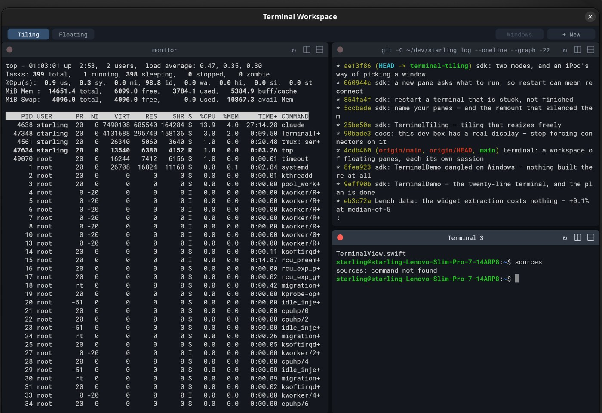
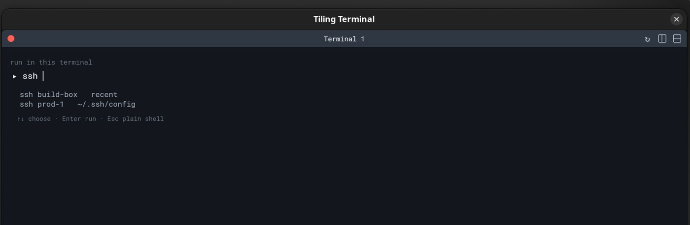

Twenty lines of Swift open a complete terminal — the user's shell on a PTY, wide characters, grapheme clusters, mouse reporting, scrollback, selection, clipboard, fonts and fallbacks. Not a library you wire up. A widget you place.
A few hundred more lines turn it into the workspace below: many terminals, tiled or floating, whose seams you can drag, whose windows you can name, and each of which knows the command it was opened for.
One unedited take on a stock Ubuntu 26.04 GNOME session, driven by a script.
A new pane asks what to run; two splits later, dragging the seam between
them resizes both live — the child processes are resized with
it, which is why top reflows as the boundary moves.
TerminalSession owns the emulator and the PTY.
TerminalView renders it and routes input. Everything else —
the C emulator core, the fonts, the escape-sequence handling, the
selection model — comes with the widget.
import ExampleHost import Flutter let session = TerminalSession() session.startShell() runExampleApp(title: "Terminal", width: 940, height: 620) { TerminalView(session: session) }
Run it with swift run -c release TerminalDemo. The file is 26
lines including the licence header and the comment explaining itself.
feed() yourself — an SSH channel, a replay, a remote agent
Tiling window managers make you accept their geometry. Here every boundary
is draggable, and the panes behind it resize live — each pane's view is told
its box, so its grid follows and its shell gets a real
SIGWINCH as the pointer moves. Splits are ratios rather than
pixel counts, so resizing the window redistributes every pane at once and
nothing has to be re-tiled.

Three panes, three shells, three scrollbacks — and no terminal code
in the app at all. The tiling example is geometry, chrome and
z-order: a split tree, a couple of drag handlers, and a
TerminalView in each leaf.
A new pane asks what to run, offering the Host entries from
your ~/.ssh/config and the commands you ran before. Opening
a terminal is usually opening it for something, and the hostname
is the part nobody remembers.
When a connection drops, the pane looks alive and answers nothing. ↻
kills the old process group — the wedged ssh, not just the
shell above it — and runs the same command again, keeping the scrollback
so you can still read what was on screen when it hung.

Type to filter, ↑↓ to choose, Enter to run — or Enter on an empty line for the plain shell you would otherwise have got automatically.
One toolbar toggle swaps the whole workspace between tiling and floating. The panes are the same either way: one split tree still says which terminals exist, and the mode only decides whether they are laid out edge to edge or given frames to drag around. Frames are remembered, so flipping back and forth leaves every window where it was.
Picking among a dozen windows by title is a guessing game, so the switcher shows them as covers: the chosen window square to the viewer, its neighbours turned away in perspective, flipped through with the arrow keys. Every cover renders what is actually on that terminal's screen right now — its live grid, read straight out of the session — so you choose the window you meant rather than the name you half remember.
Same session, same script: a window is moved and resized, another raised and
renamed to monitor, then the switcher is flipped through and
Enter opens one — which both raises it and hands it the
keyboard. The take ends back in tiling, with the same three terminals.
The emulator underneath is ~1.5k lines of dependency-free C. It is fast enough that the interesting comparison is with ghostty, the fastest terminal on the platform — same machine, same GNOME Wayland session, same grid, terminals alternating, best-of-N.
| Workload | Starling | ghostty nightly | Ratio |
|---|---|---|---|
| 10_binary | 1.880 | 8.766 | 0.21× |
| 03_sgr_fg | 1.334 | 5.121 | 0.26× |
| 04_sgr_truecolor | 1.885 | 3.738 | 0.50× |
| 06_cursor_motion | 0.062 | 0.101 | 0.61× |
| 05_unicode | 1.437 | 1.597 | 0.90× |
| 01_light_cells | 2.362 | 2.395 | 0.99× |
| 02_dense_cells | 1.007 | 0.969 | 1.04× |
| 07_alt_screen | 0.741 | 0.701 | 1.06× |
| 08_scroll_region | 1.787 | 1.647 | 1.09× |
| 09_long_lines | 0.645 | 0.592 | 1.09× |
| Total, seconds | 13.140 | 25.627 | 0.51× |
Median-of-5, 6× corpus, fullscreen protocol at a verified 238×62 grid. Per-workload spread is ~5% for both terminals. The shorter standard suite puts the same pair at 0.55× (1080p) and 0.56× (4K); the losses shrink as the runs get longer, because startup effects stop being charged against a 0.1-second denominator.
On ghostty's own published tests it is one-all-one: DOOM-Fire is decisively
ours (1960 fps vs 1224 on this laptop; 544–561 vs 354–371 on a second
machine), the 150 MB ASCII cat is a coin flip, and the unicode
cat goes to whichever machine you run it on.
The ASCII case is honest and instructive: 150 MB through a PTY costs
0.74–0.75 s for every read(2)-based consumption pattern we can
construct on that box — that is the transport floor, and we sit on
it. The nightly gets below it with io_uring. Matching
that is a transport rewrite, not a tune, and we have not done it.
Memory is the other honest column: after three suites our RSS settles at 240 MB against ghostty's 171 MB. It used to be 399 MB before six retain-cycle leaks were found and fixed — the price of a garbage-collected framework's reference patterns being ported onto ARC.
One more caveat we insist on: quote per-machine pairs, never cross-machine absolutes. Racing the same ghostty commit on two machines showed it dropping 45–55% between them where ours dropped 15–20%. Every number here is a pair measured back to back on one box.
Speed is easy to buy by cutting corners on text. So the same box, the same
day, ran ucs-detect --all against both terminals: wide
characters, narrow, ZWJ emoji families, and 118 languages of Indic
conjuncts. Starling: zero errors in every category across 37k+
measurements. The ghostty nightly: 33 — one wide miss and 32
language-conjunct errors. 26 conformance checks run in the desktop's
fast test tier on every change.
Correct wide advance is not free — it wraps more and pays a width lookup per scalar, and the unicode workloads moved a few percent against us when it landed. That trade is in the numbers above.
A terminal is a demanding widget: a million lines a second of escape sequences, a grid that must repaint without tearing the frame budget, text shaping that has to be exactly right, and a child process on the other end of a file descriptor. It is the kind of thing people write frameworks around, not in.
Moving it into the SDK cost the benchmarks +0.1% at median-of-5 — and made everything after it cheap. The tiling workspace, the per-pane launcher, the restart-that-reconnects: all of it is app code that never touches an escape sequence. That is the argument for the whole framework, in one widget.
Both examples live in the SDK. They open an ordinary window on any Wayland or X11 desktop — no Starling desktop required.
# the twenty-line terminal swift run -c release TerminalDemo # the tiling workspace: splits, draggable seams, named panes swift run -c release TerminalTiling